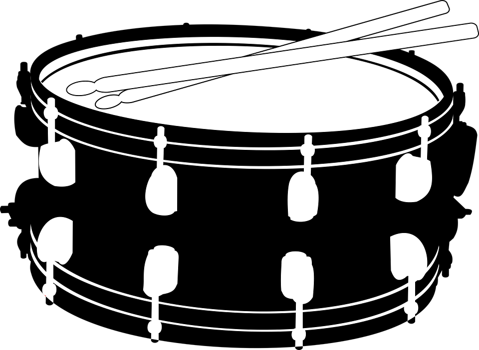

¿Qué es la batería?
 El batería/baterista suele usar baquetas o
escobillas para golpear los parches de los tambores y los platos.
La batería es un conjunto de instrumentos musicales de percusión usado por muchas agrupaciones musicales. La
batería musical es un conjunto de instrumentos de percusión que se unen en un único dispositivo. Las
baterías musicales tienen platillos, toms, bombos, cajas y tambores, los cuales deben ser tocados mediante
el uso de baquetas.
Se puede decir que la bateria eta confromado de las siguintes partes las cuales son:
El batería/baterista suele usar baquetas o
escobillas para golpear los parches de los tambores y los platos.
La batería es un conjunto de instrumentos musicales de percusión usado por muchas agrupaciones musicales. La
batería musical es un conjunto de instrumentos de percusión que se unen en un único dispositivo. Las
baterías musicales tienen platillos, toms, bombos, cajas y tambores, los cuales deben ser tocados mediante
el uso de baquetas.
Se puede decir que la bateria eta confromado de las siguintes partes las cuales son:
- 1) Platillos Ride y Crash
- 2) Tom de piso
- 3) Toms 1 y 2
- 4) Bombo
- 5) Caja o tarola
- 6) hi hat o contratiempos.
El batería/baterista suele usar baquetas o escobillas para golpear los parches de los tambores y los platos. La batería es un conjunto de instrumentos musicales de percusión usado por muchas agrupaciones musicales.
Hemos visto que la batería es una amalgama de distintos instrumentos de percusión, por lo que dominar la técnica no es sencillo. Es muy habitual emplear un metrónomo para practicar, ya que ayuda a no perder el sentido del pulso y a encajar las subdivisiones de cada compás. No debemos olvidar que la batería, como instrumento de percusión, es muchas veces el verdadero motor estructural del ritmo de una canción.
Aunque comenzó siendo interpretado por varios instrumentistas, en 1910 se inventó un pedal para el bombo, lo que permitió que la batería pudiera tocarla un solo músico habilidoso. El intérprete se llama batería o baterista.
La batería se toca sedente, en un sillín o taburete a modo de trípode redondo, ya que se necesitan las dos manos y los pies. Es imprescindible contar con baquetas de distintos tipos. Aunque se suelen usar baquetas de madera, también existen de fibra o plástico. Es usual también que se empleen escobillas, que poseen cerdas metálicas o de plástico aunadas en un mango de goma; su sonido es más brillante y envolvente, por lo que se suelen usar en música de jazz o blues.
Para dominar la batería se requiere desarrollar el sentido rítmico; muchos comienzan aprendiendo a percutir con las manos motivos progresivamente más complejos: ritmos asincopados, a contratiempo, polirritmias… Más adelante conviene trabajar la simultaneidad de sonidos e instrumentos, hasta lograr la independencia de las extremidades.